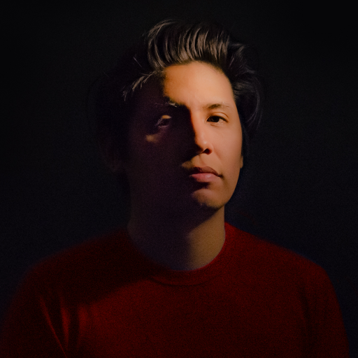

Inizio a lavorare all'età di 16 anni, nel 2006, come Visual Designer per band metal. Concluso il diploma riprendo a lavorare con agenzie di comunicazione come Visual Designer e Videomaker. Non contento del lavoro che facevo, decido di iniziare a studiare design delle comunicazioni nel 2011.
Dal 2013, grazie ai lavori ottenuti precedentemente, mi specializzo nello studio dell’esperienza di interfaccie e prodotti digitali.
Apprendo metodi e tecniche come la ricerca etnografica, la psicologia cognitiva, il digital marketing, il growth hacking, il design thinking, il design dell'interazione e il design dell'esperienza.
Grazie ai differenti contesti per i quali ho lavorato, dalla bottega di un design studio, alla startup, passando per la consulenza in multizionali, riesco ad avere una visione strategica e tecnica dei touchpoint necessari a creare la migliore esperienza omnicanale per il business e gli utenti finali.
Oggi, dopo più di 10 anni nel mondo del lavoro, mi occupo di aiutare privati, aziende, startup e PMI a raggiungere i loro obiettivi di business digitali, attraverso competenze cross-disciplinari che vanno a toccare il marketing digitale, la customer experience e la consulenza strategica.
Scopri i miei servizi
Guarda qualche lavoro
